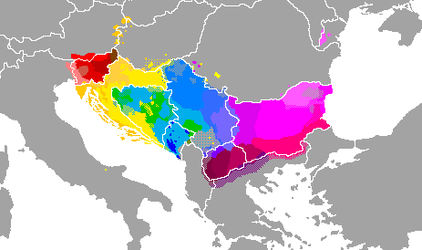

Južnoslavenski jezici

Južnoslavenski jezični kontinuum sastoji se od dijalektnog sustava koji se proteže od jugoistočnih Alpi do Crnoga mora, tvore ga sljedeći nacionalni standardni jezici:
- slovenski jezik
- hrvatski jezik
- bošnjački jezik
- crnogorski jezik
- srpski jezik
- makedonski jezik
- bugarski jezik
Hrvatski jezik kao sustav obuhvaća prostor triju narječja koja su se ustrojila tijekom povijeti, to su kajkavsko narječje koje se sa svojim istočnim dijalektima nadovezuje na sjeverozapadne štokavske dijalekte što je izraženo u križevačko-podravskom dijalektu i u sjeverozapadnim govorima slavonskoga dijalekta.
Štokavsko narječje hrvatskoga jezika obuhvaća zapadnoštokavske dijalekte.
Na istoku hrvatskog sve do zapadnih dijelova srpskog i crnogorskog jezičnog sustava formirao se bošnjački jezični sustav koji se prostire od hrvatskih zapadnoštokavskih dijalekata i govora do istočnoštokavskih dijalekata, taj sustav ustrojavao se je od turske vladavine pa sve do današnjih dana a ubuhvaća islamizirano pučanstvo između Novog Pazara na istoku u Sandžaku i Bihaća na zapadu u turskoj Hrvatskoj, bez jasno diferenciranih crta prema zapadu i istoku. Glavnina sustava bošnjačkog jezika spada u istočnobosanski dijalekt sa oko 55% dok je osatak sustava u istočnohercegovačkom, zapadnoštokavskom i zetsko-sandžačkom dijalektu.
Quelle: Wikipedia